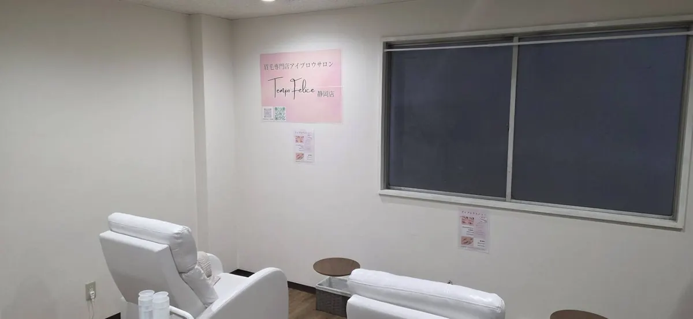

内訳を直下で公開／本採用後は売上連動型給与あり
Recruit / Shizuoka
静岡市のアイブロウリスト求人｜TempoFelice 静岡店
お客様の眉と向き合い、日常を前向きにする仕事。美容師免許を活かし、実務未経験から段階的に成長できます。

Job Overview
募集要項
掲載日：2026年7月25日。募集状況は採用フォームまたは会社公式LINEでご確認ください。
募集中最終更新：2026.08.15
希望休月3日程度／土日月2日まで／翌々月シフト
実務未経験から相談可能
静岡駅北口から徒歩7分。
- 職種
- アイブロウリスト（正社員）
- 仕事内容
- カウンセリング、眉デザイン、アイブロウ施術、接客、予約管理、店内清掃、SNS発信、店舗運営に付随する業務。
- 応募資格
- 美容師免許必須。実務未経験可。経験者は経験・能力を考慮します。
- 給与
- 基本給176,000円＋皆勤手当10,000円（支給条件あり）＋固定残業代14,532円（10時間分）＋交通費。皆勤手当支給時の内訳合計は200,532円＋交通費です。固定残業10時間を超える時間外労働分は別途支給します。 本採用後は月間認定売上500,000円超〜800,000円未満は売上総額の40％、800,000円以上は50％を売上連動型給与の算定額とします。固定給側の算定額と比較し、高い方を支給します。対象売上の集計基準は賃金規程・募集要項で明示します。
- 交通費
- 月20,000円まで。
- 勤務時間
- 月160時間を所定労働時間の基準とするフレックスタイム制。実労働時間は社内実績の目安で月平均約163時間です。勤務開始・終了時刻は日やスタッフにより異なり、18〜19時台に退勤するスタッフが多い状況です。
- 休日
- 年間休日（所定休日）は125日。年次有給休暇が年10日以上付与される方は年5日以上の取得が必要なため、5日取得した場合は年間130日程度の休みになります。希望休は月3日程度で、毎月15日までに希望を出し、翌々月のシフトを作成します。土日休みは月2日まで希望可能です。
- 勤務地
- 〒420-0032 静岡県静岡市葵区両替町2丁目6番地 河村ビル2B。静岡駅北口から徒歩7分。
- 研修
- 基礎研修は3日間。その後、技術研修を1〜2週間程度行い、モデル施術へ進みます。モデル施術50名程度を一つの目安に、技術・接客の確認を行ってデビューを判断します。習熟度により期間・人数は前後します。
- 試用期間
- 試用期間6か月。期間中も基本給176,000円＋皆勤手当10,000円（支給条件あり）＋固定残業代14,532円（10時間分）＋交通費を基本構成とし、売上連動型給与制度は適用しません。10時間を超える時間外労働分は別途支給します。
- 加入保険
- 社会保険完備（健康保険・厚生年金保険・雇用保険・労災保険）。
- 業務の変更範囲
- 上記業務およびサロン運営に付随する業務。
- 就業場所の変更範囲
- 本人の希望と事業上の必要性を踏まえ、TempoFelice各店舗の範囲で相談の上決定します。
- 募集者
- 合同会社Axis Agency
試用期間は6か月です。期間中は月給200,000円〜（皆勤手当10,000円を含む。現在の内訳合計は200,532円）で、売上連動型給与制度は適用しません。基本給と固定残業手当の具体額は、応募時点の募集要項および労働条件通知書で明示します。基本給176,000円＋皆勤手当10,000円（支給条件あり）＋固定残業代14,532円（10時間分）＋交通費。皆勤手当支給時の内訳合計は200,532円＋交通費です。固定残業10時間を超える時間外労働分は別途支給します。 本採用後は月間認定売上500,000円超〜800,000円未満は売上総額の40％、800,000円以上は50％を売上連動型給与の算定額とし、固定給側の算定額と比較して高い方を支給します。 売上連動型給与は固定給への上乗せ方式ではありません。社会保険完備（健康保険・厚生年金保険・雇用保険・労災保険）。
Workplace & Access
静岡市葵区両替町で働く
静岡市葵区両替町、静岡駅北口から徒歩7分の店舗です。静岡市でアイブロウリストの正社員求人を探している方へ、仕事内容・研修・給与・休日・応募方法を一つのページで確認できるようにしています。
静岡店の勤務環境
- 勤務地
- 〒420-0032 静岡県静岡市葵区両替町2丁目6番地 河村ビル2B
- アクセス
- 静岡駅北口徒歩7分
- 勤務形態
- 正社員 / 月160時間を基準とするフレックスタイム制
- 応募資格
- 美容師免許必須 / 実務未経験可
Salary Model
月給20万円〜。成果次第で40万・45万・50万円へ。
固定給側と売上連動型給与を比較し、高い方を支給する仕組みです。内訳と計算例を応募前に確認できます。
80万円以上は売上総額の50％で算定
成果がそのまま給与水準に反映
固定給側と比較して高い方を支給
固定月給
月給 200,000円〜＋交通費
現在の内訳合計：200,532円＋交通費
- 基本給176,000円
- 皆勤手当10,000円（支給条件あり）
- 固定残業代14,532円（10時間分）
- 10時間超過分は別途支給
- 本採用後は売上連動型給与あり
売上連動型給与
本採用後は月間認定売上500,000円超〜800,000円未満で40％、800,000円以上で50％を算定し、固定給側の算定額と比較して高い方を支給します。
月間認定売上売上連動給与の算定額
600,000円240,000円（40％）
800,000円400,000円（50％）
900,000円450,000円（50％）
1,000,000円500,000円（50％）
最終支給額は固定月給と上記算定額を比較し、高い方です。
売上連動型給与は固定給への上乗せではありません。 固定給側の算定額と比較し、高い方を支給します。
適用する給与体系、基本給、固定残業手当、皆勤手当の支給条件、控除等は、応募時の募集要項と労働条件通知書で確認します。上記は手取り額を保証するものではありません。
What You Do
担当する仕事
カウンセリング
お客様の希望、骨格、毛流れ、日常のメイク方法を確認し、施術内容を分かりやすく説明します。
眉デザイン・施術
資格と社内基準に基づき、眉WAX、美眉スタイリング、HBL、間引き等を担当します。
接客・予約対応
来店から退店までの接客、予約確認、次回来店の案内など、顧客体験を整えます。
店舗づくり
清掃、備品管理、SNS発信、スタッフ間の情報共有など、店舗運営にも関わります。
Benefits & Support
手当と働き方の支援
交通費
通勤交通費は月20,000円まで。適用条件は会社規程に基づきます。
成果・役割手当
物販・役職・SNSの手当があります。本採用後は固定月給と売上連動型給与の算定額を比較し、高い方を総支給月給とします。
希望休
希望休は月3日程度。毎月15日までに希望を出し、翌々月のシフトを作成します。土日休みは月2日まで希望可能です。
研修フォロー
基礎研修3日＋技術研修1〜2週間程度。その後、モデル施術50名程度を目安にデビューを判断します。
Training & Career
未経験からの研修
経験や習熟度を確認しながら、基礎から段階的に進めます。
- 基礎研修3日ブランド・衛生・接客
店舗ルール、衛生管理、接客基準を3日間で確認します。
- 技術研修1〜2週間カウンセリング・技術
希望の聞き取り、説明、眉デザイン、施術技術を確認します。
- モデル約50名モデル施術
モデル施術を通じて技術・接客を実践的に確認します。
- 基準確認後チェック・デビュー
期間や人数だけで決めず、社内基準を確認してデビューします。
Career
入社後に広げられる役割
施術担当としての専門性に加え、得意分野や希望に応じて店舗づくりに関わることができます。
施術・接客
カウンセリングと技術を磨き、再来につながる顧客体験をつくります。
後輩支援
技術確認、接客共有、デビュー支援など、チーム内の役割を広げます。
店舗運営
予約、数値、備品、採用・研修など、店舗運営に関わる役割例があります。
SNS・採用発信
撮影、SNS、採用コンテンツなど、ブランド発信に得意分野を活かせます。
Before You Apply
応募前に確認すること
応募フォームでは、次の内容を入力できるよう準備しておくと選考がスムーズです。
- 01美容師免許
取得済みか、取得予定かをご記載ください。
- 02希望店舗
「静岡店」を第一希望としてご記載ください。
- 03経験・得意分野
未経験の場合も、その旨をそのままご記載ください。
- 04希望入社時期
現在の予定に合わせた目安で問題ありません。
Selection Flow
応募から入社まで
- 01フォーム送信
希望店舗、資格、経験等をご入力ください。
- 02採用担当から連絡
面接方法と日程を調整します。
- 03面接・店舗見学
仕事内容や働き方を相互に確認します。
- 04条件を書面で確認
労働条件を確認し、入社日を決定します。
FAQ
この求人のよくある質問
実務未経験でも応募できますか？
美容師免許をお持ちであれば、実務未経験からの応募も相談可能です。経験と習熟度に応じて研修内容を調整します。
店舗見学だけでも可能ですか？
募集状況と予約状況を確認して調整します。採用フォームまたは会社公式LINEから静岡店の見学希望とお知らせください。
土日に休めますか？
年間休日（所定休日）は125日。年次有給休暇が年10日以上付与される方は年5日以上の取得が必要なため、5日取得した場合は年間130日程度の休みになります。希望休は月3日程度で、毎月15日までに希望を出し、翌々月のシフトを作成します。土日休みは月2日まで希望可能です。
給与体系はどのように決まりますか？
基本給176,000円＋皆勤手当10,000円（支給条件あり）＋固定残業代14,532円（10時間分）＋交通費。皆勤手当支給時の内訳合計は200,532円＋交通費です。固定残業10時間を超える時間外労働分は別途支給します。 本採用後は月間認定売上500,000円超〜800,000円未満は売上総額の40％、800,000円以上は50％を売上連動型給与の算定額とし、固定給側の算定額と比較して高い方を支給します。 売上連動型給与は固定給への上乗せ方式ではありません。試用期間中は基本給176,000円＋皆勤手当10,000円（支給条件あり）＋固定残業代14,532円（10時間分）＋交通費を基本構成とし、売上連動型給与制度は適用しません。
配属後に他店舗へ異動することはありますか？
店舗間の異動は、引っ越しを必要としない通勤可能な範囲で、本人の希望・通勤状況・店舗体制・事業上の必要性を踏まえて相談の上決定します。
Recruiter Information
募集主・応募窓口
- 募集主
- 合同会社Axis Agency
- 所在地
- 〒430-0925 静岡県浜松市中央区寺島町17 フレクション浜松1-104
- 応募費用
- 応募者に費用はかかりません。
Other Locations